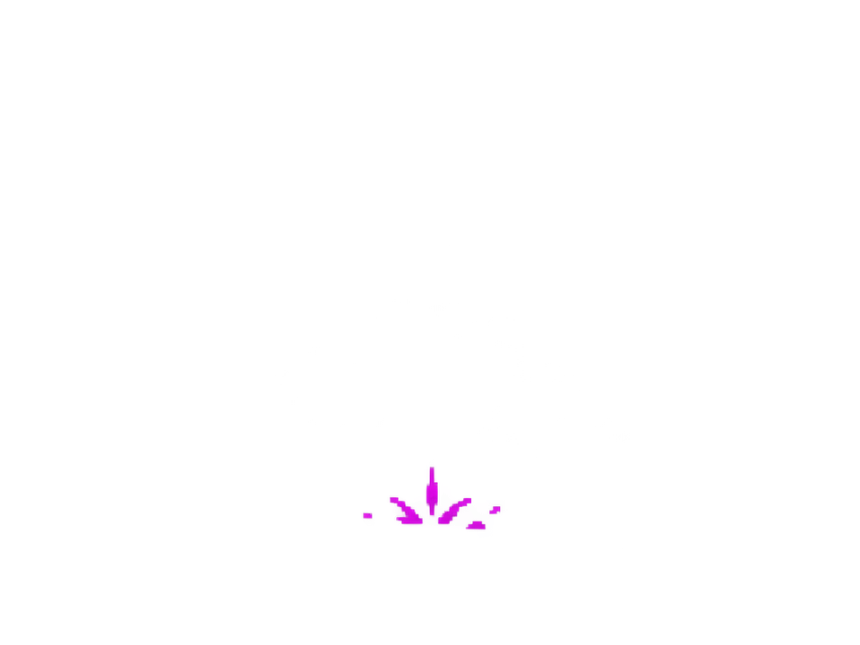
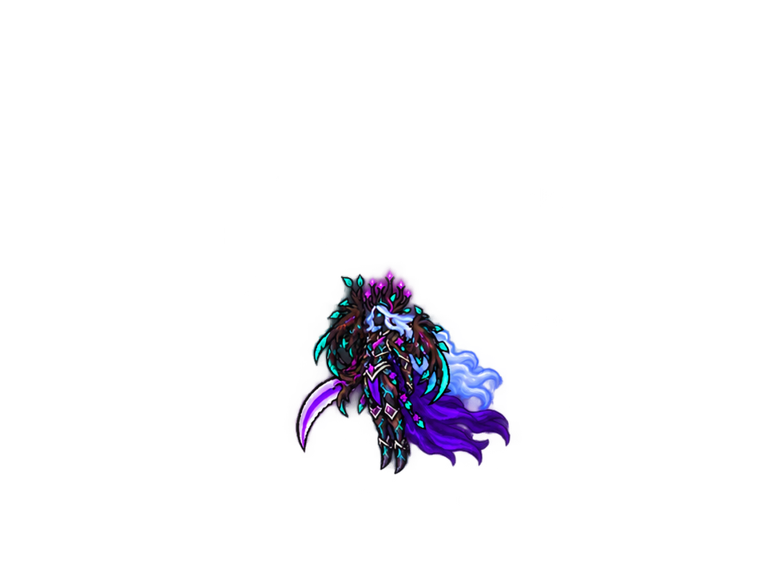

Hakenranke

GIF · PNG-Sheet · JSONWeltgericht · Königin

GIF · PNG-Sheet · JSONAnimierte Grafikentwürfe. Beide Ranken fahren aus derselben Bodenstelle hervor und versinken wieder darin. Das Weltgericht entlädt sich nach zwei Sekunden und trifft laut Spielkonzept den gesamten Saal sofort tödlich, auch durch den Amulett-Schild. Königin und Saaleffekt sind getrennt und zeitlich synchronisiert.

GIF · PNG-Sheet · JSON
GIF · PNG-Sheet · JSONPNG-Sheets, Transparenz und Timing sind geprüft. Noch keine fertigen PSP-Sprites oder eingebundenen Spieleffekte. Dateien und Grenzen · Imagegen-Prompts